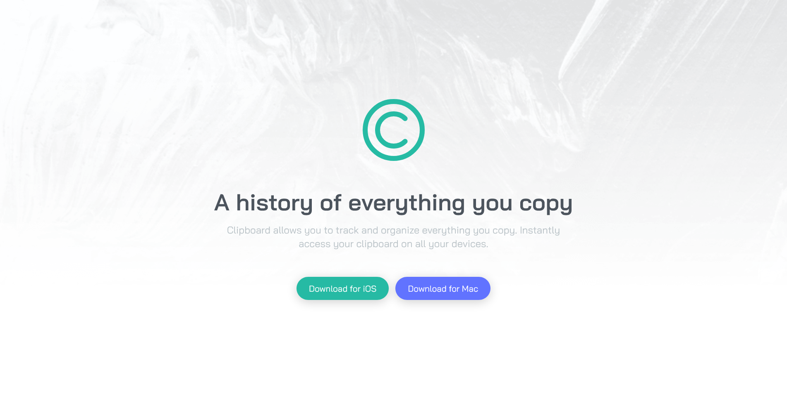
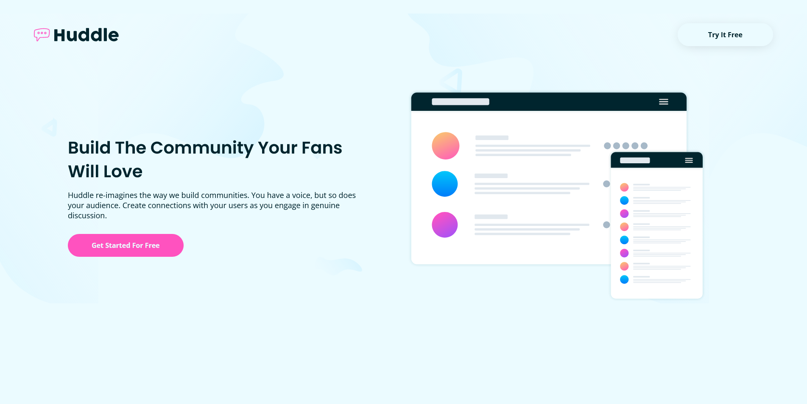
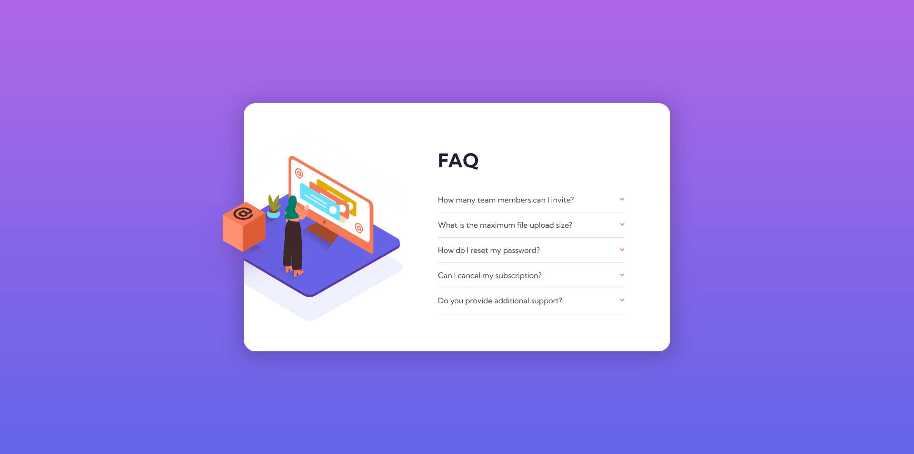

Projects
I constantly build projects to strengthen my skills and learn new things at the same time.
This are the technologies I have experience with:
-
HTML5
-
Git
-
CSS3
-
Figma
-
Javascript
-
Sass
This Are Some Of My Projects:

Frontend
A landing page with 6 different sections, active states and responsive in all resolutions. This page was made as a Frontend Mentor challenge.

Frontend
A landing page with 3 different sections, a responsive navbar, active states and responsive in all resolutions. This page was made as a Frontend Mentor challenge.

Frontend
A fully functional and responsive accordion with active states for each action. This page was made as a Frontend Mentor challenge.